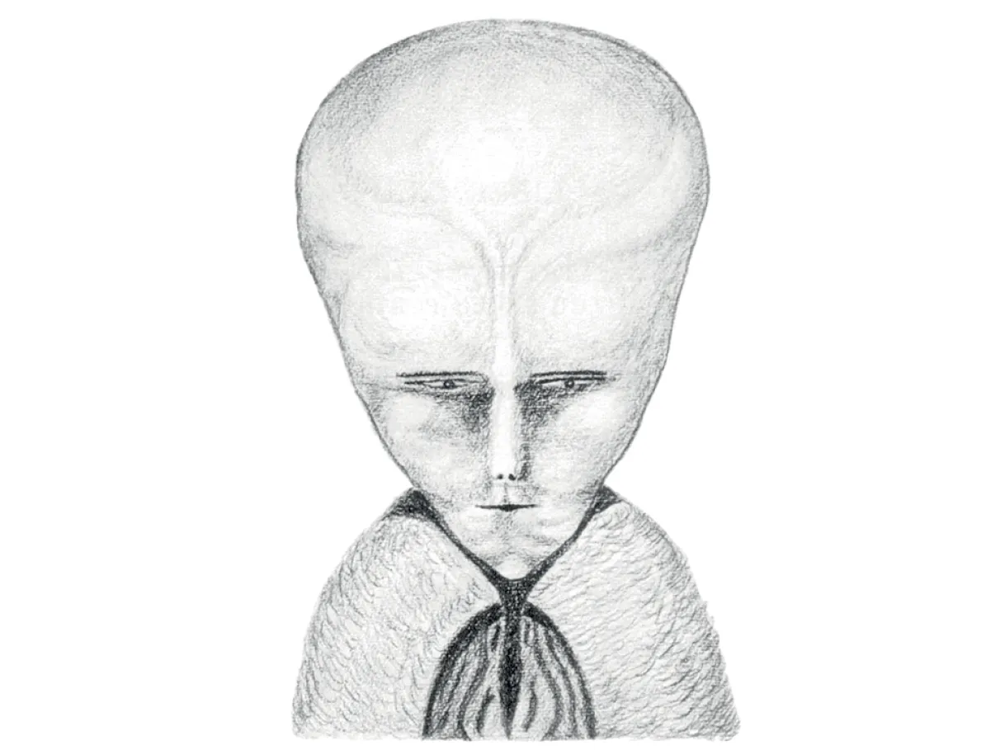

Aleister Crowley foi um influente ocultista, mago cerimonial e escritor britânico, nascido em 1875, que fundou a doutrina filosófica e religiosa chamada Thelema.
Tudo sobre Thelema na fundação e nos dias atuais
Organizações históricas como a Ordo Templi Orientis (O.T.O.) e a A∴A∴ mantêm templos, estudos e rituais em vários países, incluindo o Brasil, O acesso ao Liber Al vel Legis (O Livro da Lei) e aos escritos de Aleister Crowley é facilitado por sites, podcasts, redes sociais e editoras independentes. Muitas pessoas adotam preceitos thelêmicos como ética pessoal e autoconhecimento sem necessariamente se filiarem a estruturas religiosas formais.
Tudo sobre a organização Golden Down e seus discípulos
A sociedade secreta fundada na Inglaterra em 1888 dissolveu-se em cismas na virada do século XX, diversas ordens modernas ao redor do mundo usam o nome ou o currículo da Golden Dawn. Nenhuma possui o monopólio ou o "brilho" da matriz histórica, mas mantêm o sistema vivo. Grande parte dos rituais, ensinamentos de Cabala, tarô, astrologia e magia cerimonial da ordem foi publicada em livros (notadamente por Israel Regardie no século XX), tornando o material acessível para o estudo autônomo ou em grupos independentes (templos).